行者无疆#间奏#——登封行

行者无疆——登封行
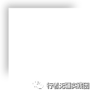
嵩阳书院
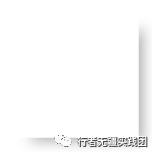
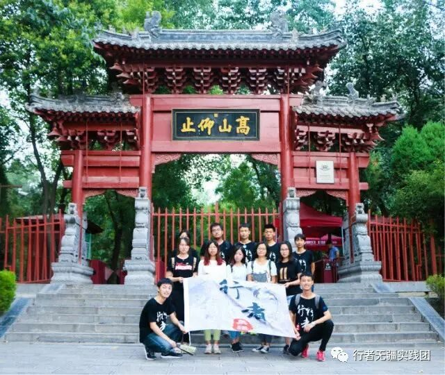
酷夏烈日暴戾，沿途颠簸与辗转，我们终于到达了古代著名的四大书院之一—嵩阳书院。
迎接我们的是一古色的牌坊，乾隆皇帝御笔亲题的“高山仰止”四个字犹为清晰，“高山仰止，景行行止”虽不能至，而心向往之。谨记圣贤的谆谆教诲，我们一行人开始了虔诚的探索之旅。
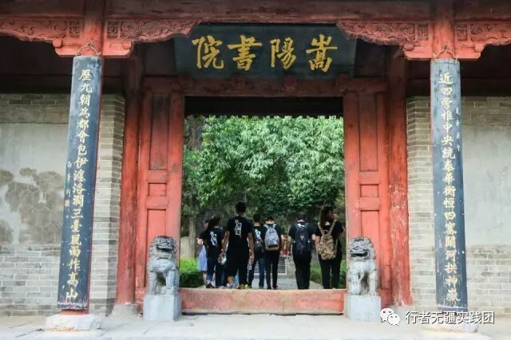
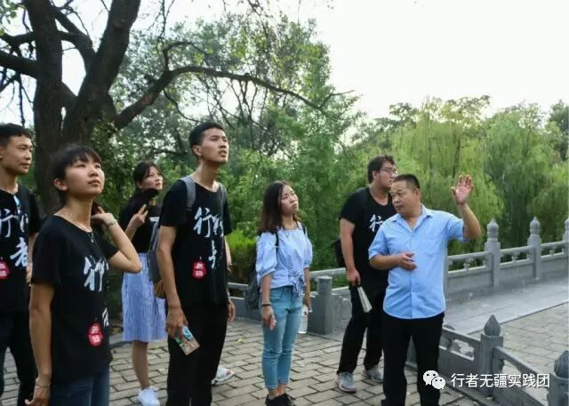
汉武帝封的参天“将军柏”：两位将军各自站成了彼岸，盘虬卧龙般的枝干，苍劲繁茂的浓绿，将千年积淀的沧桑，全部写进了生命脉络里，沿着古柏的生命脉络向前追溯，他们犹如两位老翁，以旁观者的心态，见证历史千秋的兴衰更迭：从北魏建寺伊始；到明末，不知其原的大火，殿堂建筑被焚烧殆尽；再至清朝王日藻主持重修，嵩阳书院千古流芳。流年日深，他们不抨击，不惋惜，不言语，只是傲然而立，这一立，就是4500年。
<< 滑动查看下一张图片 >>
“
沿着小径重走古人求学之路，氤氲恍惚中仿佛在朱漆门廊下做了一场潮湿的美梦，滕子京、朱熹还在讲堂间“一片丹心育新人”，先圣殿前僧徒及求学弟子还在虔诚跪拜，“程门立雪”还未成为千古佳话……历史就像一场飓风，轰轰烈烈席卷而去，我们在混沌中踩一脚，只能踩出一块转头瓦砾。而中华民族从古至今对于文化教育的尊崇与传承，却从未停止，它凝筑了中国人的脊梁，熔成了华夏的魂魄，随着时间延续着，生生不息，历久弥新。
少林寺

深入少林，有信徒在佛前伏下身躯，遁迹空门的僧侣在挑拨灯芯，德高望重的高僧寡淡肃穆，与世无争。禅宗祖庭见证着千余年佛教兴衰与荣辱——步步生莲，文武兼修，少林不张扬，却留名青史。
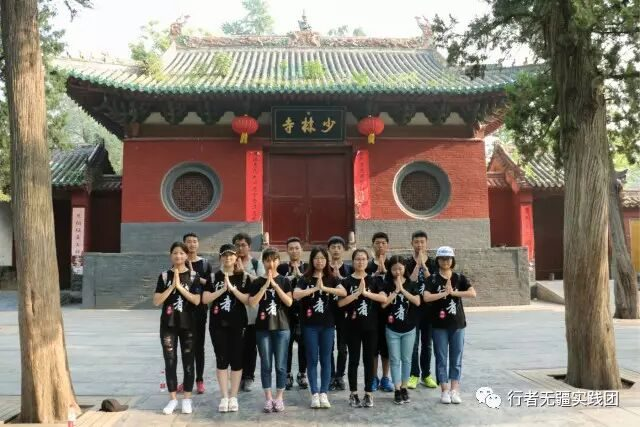
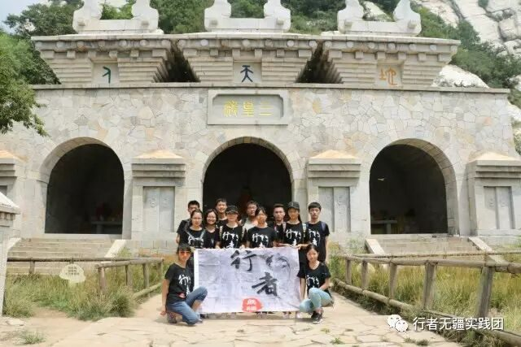
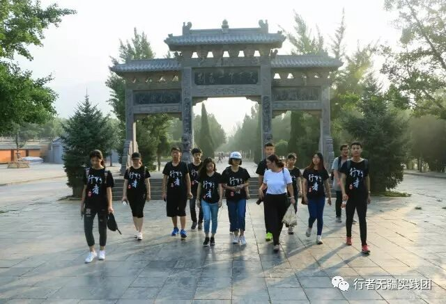
独特的少林建筑
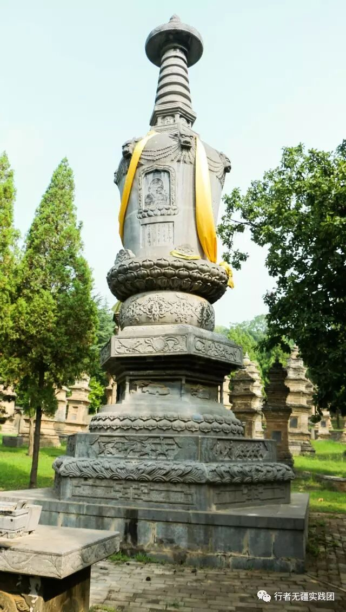
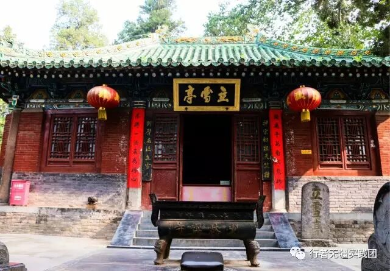
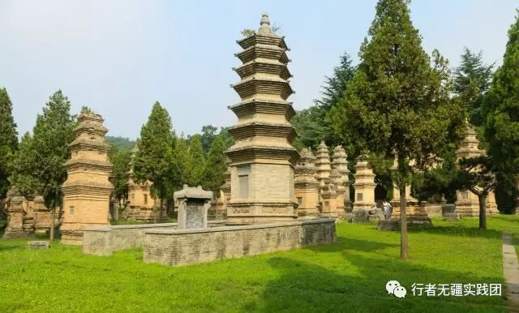
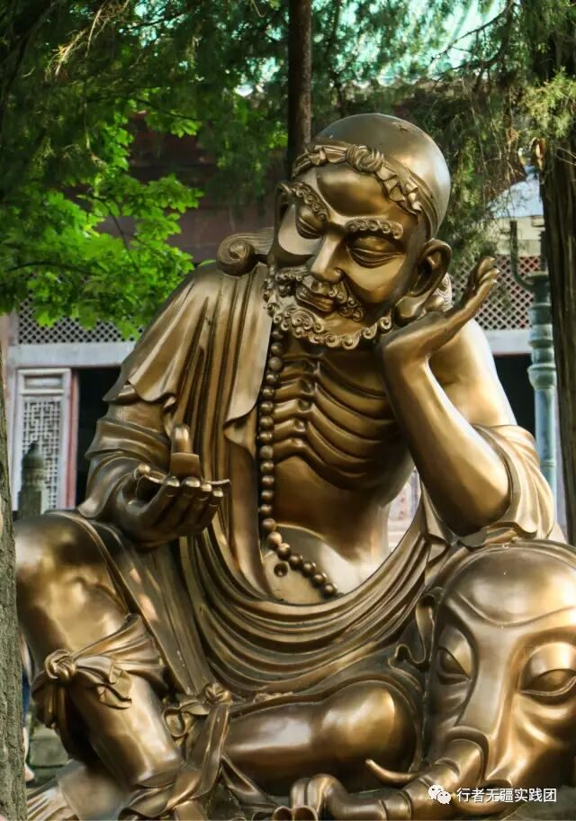
我们将关于佛教调查问卷发放到形形色色的人群中，在交流中感悟文化的魅力。
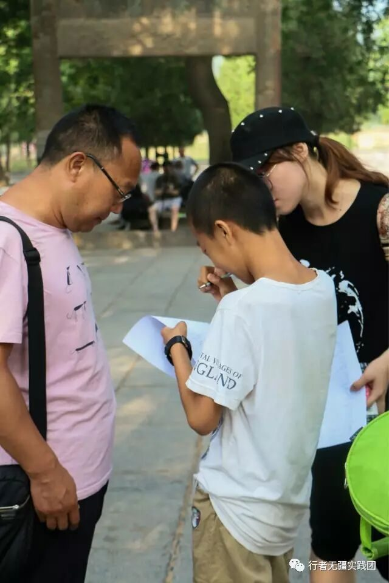
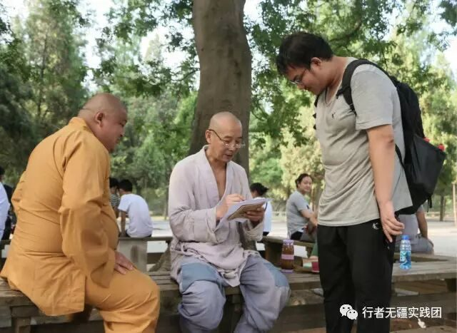
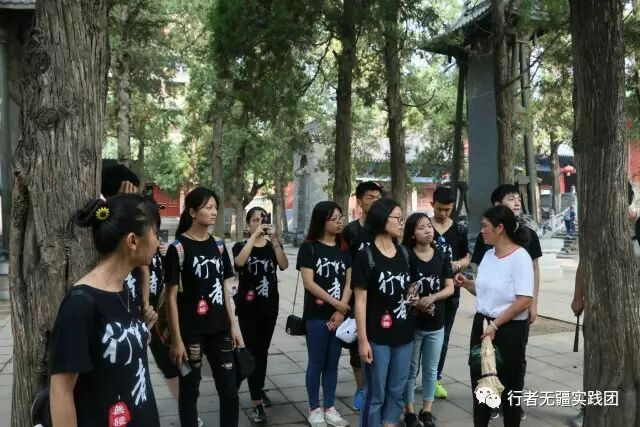
“嵩高惟岳，峻极于天”峰回路转，千年璧仞矗立眼前，近到可以肌肤相亲，近到可以呼吸相闻。千仞峭壁以其亘古不变的开阔，刻意舒展她的震撼与健美、坦荡与大度。
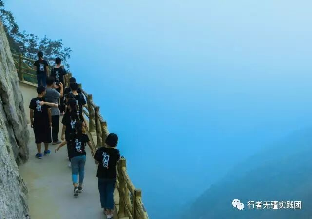
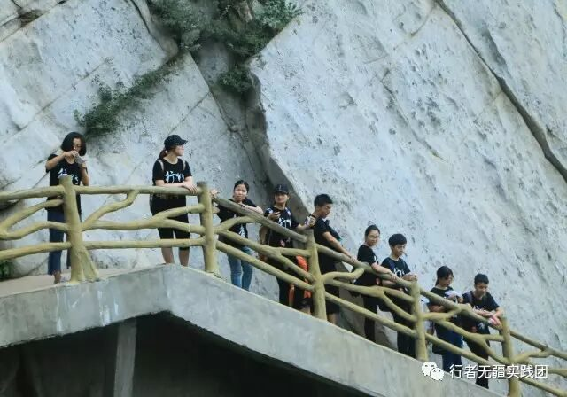
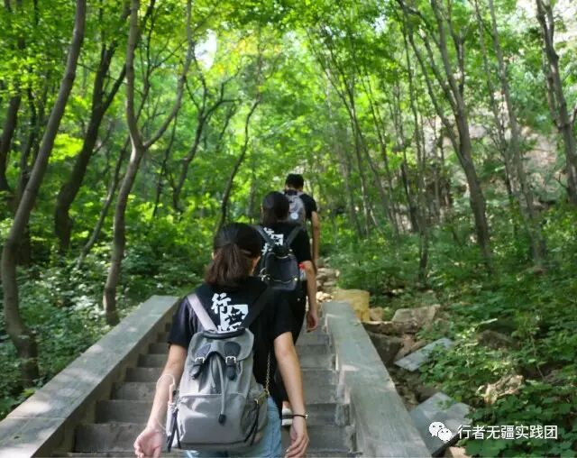
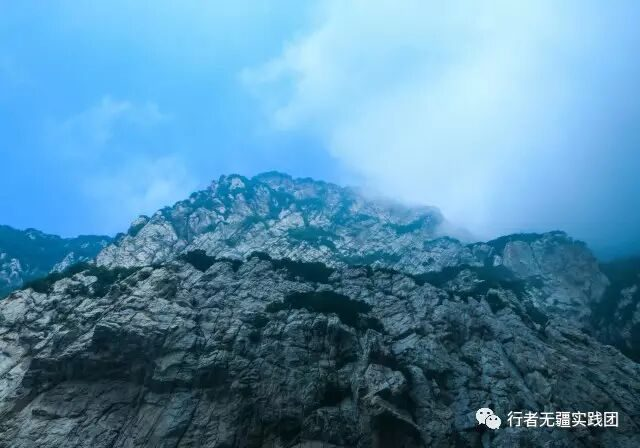
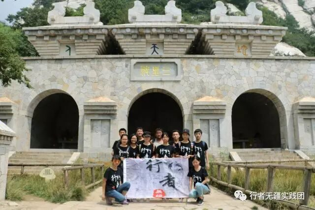
人于自然，低微如尘土瓦砾，深入丛山不见踪迹；而人类对自然，从来是敬畏与征服。去往三皇庙的路途曲折婉转，沿途沉积岩势如剑削，道旁树林阴翳，山间蝉声昂扬。穿越海拔1000米，我们终于与三帝庙如期而遇。
文化源流长
行者亦无疆
洛阳白马寺，我们，在路上
文字|李玥
责编|彭博
摄影|岳浩然 张熹玮
审核|章静 王梓腾

行者无疆
实践团
长按识别左侧二维码，关注我们
QQ号：2758025831
来源：行者无疆实践团